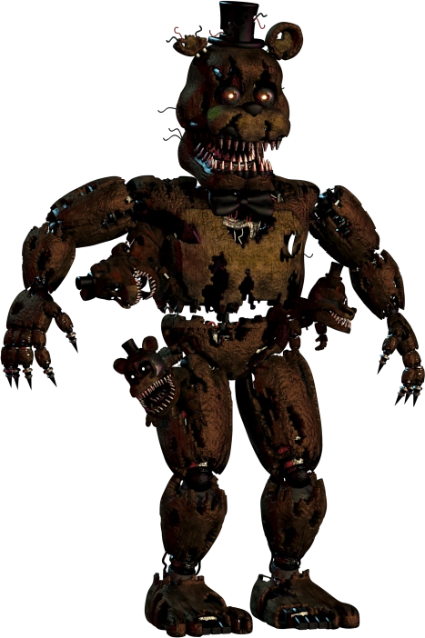
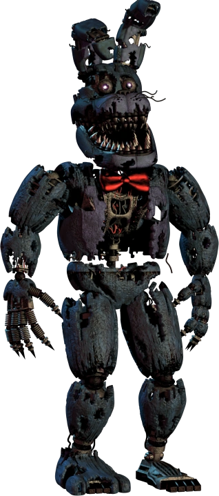
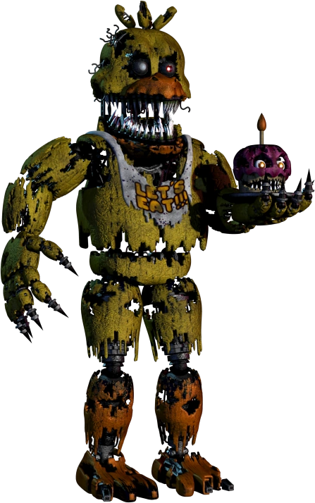
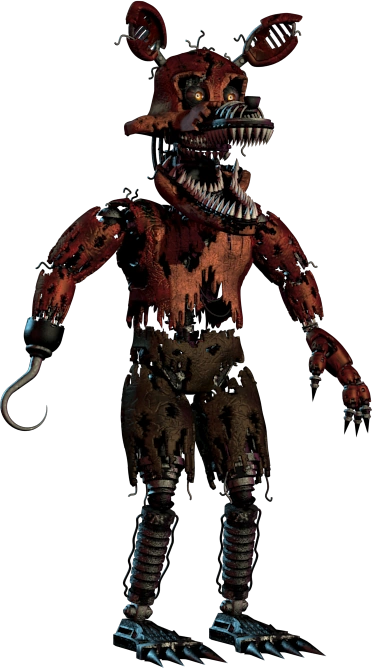
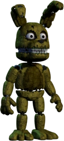
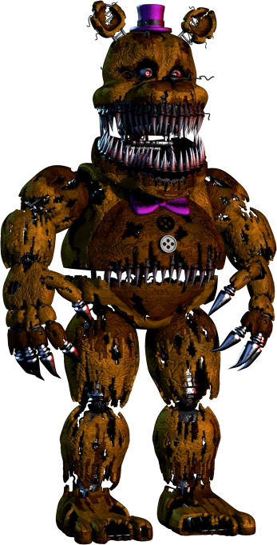
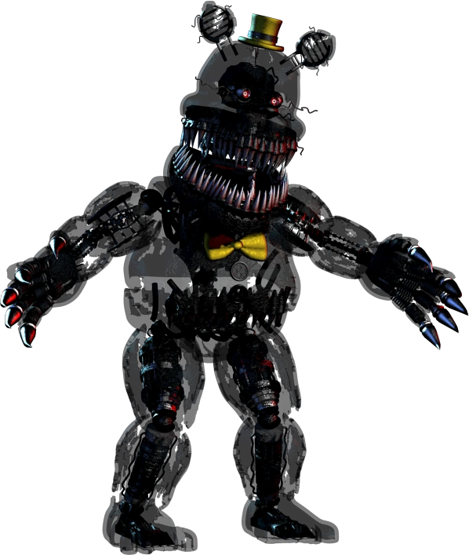

Five Nigths at Freddy´s 4 foi lançado em 23 de julho de 2015. Nesse jogo você é uma criança e deve sobreviver das 00:00 (12:00 AM) às 06:00 (06:00 AM) sem ser pego pelos animatronic, mas o diferencial aqui, é que tudo isso é um pesadelo. O Seu personagem esta em coma, devido a uma brincadeira muito sem graça feita pelo seu irmão mais velho no dia de seu aniversário.
Gameplay
Five Nights at Freddy's 4 possui uma jogatina um pouco diferente dos outros jogos da série. Notavelmente, ao invés do jogador ser um guarda de segurança em um Escritório lutando para se defender dos animatronics, o protagonista é uma criança escondida em seu quarto se afastando de versões assustadoras de Freddy e seus principais amigos. Não existem câmeras de segurança, e por conta disto, o jogador deve se ambientar aos ruídos e outros tipos de sons para saber se algo está se aproximando.
Animatronics
Nightmare Freddy
Nightmare Freddy é um inimigo de Five Nights at Freddy's 4 e um dos sete animatronics "Nightmare" do jogo. É uma versão "pesadelo" de Freddy Fazbear. Caso o jogador não vigie atentamente a cama, Nightmare Freddy aparecerá e irá atacá-lo, resultando em Game Over.
Nightmare Bonnie
Nightmare Bonnie é um inimigo e um dos animatronics de pesadelo da série Five Nights at Freddy's, aparecendo pela primeira vez em Five Nights at Freddy's 4. Ele é uma variante de pesadelo de Bonnie. Nightmare Bonnie sempre vem pela esquerda, quando ouvir a respiração feche a porta por cinco segundos.
Nightmare Chica
Nightmare Chica é uma dos animatronics de pesadelo da série Five Nights at Freddy's, aparecendo pela primeira vez em Five Nights at Freddy's 4. Ela é uma variante de pesadelo de Chica. Ela sempre vem pela direita, e assim como o Bonnie, você deve fechar a porta por 5 segundos depos que ouvir sua respiração.
Nightmare Foxy
Nightmare Foxy é um dos animatronics de pesadelo da série Five Nights at Freddy's, que apareceu pela primeira vez em Five Nights at Freddy's 4. Ele é uma variante de pesadelo de Foxy. Nightmare Foxy é visto no Armário, o qual o jogador deve vigiar para evitar um ataque do personagem. Caso o jogador falhe nisto, o animatrônico irá atacá-lo e encerrará o jogo. Além do Armário, Nightmare Foxy pode ser visto em ambos os corredores. Para evita-lo feche a porta que ele apareçer.
Plushtrap
Plushtrap é dos animatronics nightmare da série de Five Nights at Freddy's, tendo aparecido pela primeira vez em Five Nights at Freddy's 4. Ele é uma versão "nightmare" do brinquedo de pelúcia do Spring Bonnie. Sua primeira aparição se deu como o primeiro inimigo da série a ter um minigame próprio chamado Fun with Plushtrap, sendo o segundo Nightmare Balloon Boy, e ele não aparece em nenhum outro local fora do minigame. o minigame tem como objetivo ascender sua lanterna bem na hora em que Plushtrap passar no x marcado no chão, ao conseguir, você avança agumas horar na noite seguinte.
Nightmare Fredbear
É uma versão "pesadelo" de Fredbear, um personagem nunca visto no jogo (sem contar os minigames). Acredita-se que o personagem foi a primeira encarnação de Golden Freddy, mas na ocasião, chamado de Fredbear, o mascote principal de Fredbear's Family Diner. Nightmare Fredbear, inicialmente, é visto tanto no Corredor Esquerdo quanto no Corredor Direito. Quando ele não está nestes locais, no entanto, apenas sua cabeça é vista; ela pode estar dentro do Armário ou então acima da Cama.
Nightmare
Nightmare é um animatronic nightmare que estreia em Five Nights at Freddy's 4 como o boss final do jogo. Ele é uma versão recolorida e ligeiramente translúcida de Nightmare Fredbear. Ele age da mesma forma de Nightmare Fredbear podendo atacar de todos os lados.